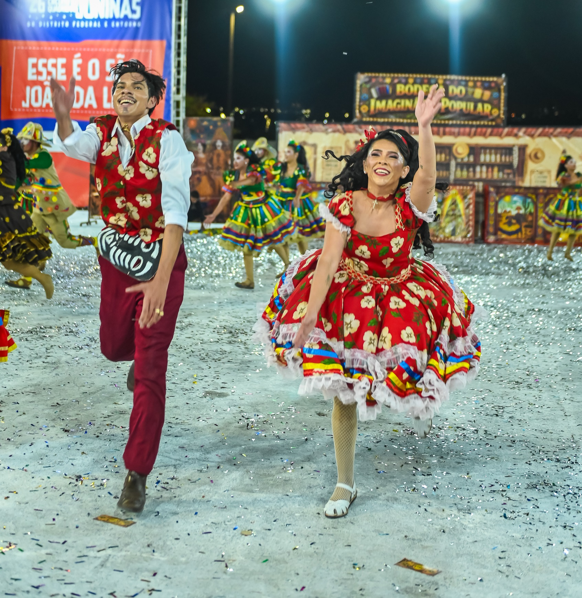

Arraiá dos Matutos
A Quadrilha Arraiá dos Matutos é de Planaltina/GO e completa 30 anos de história em 2026.
SOBRE A QUADRILHA
A Quadrilha Arraiá dos Matutos é de Planaltina/GO e completa 30 anos de história em 2026. Nascido do encontro de amigos apaixonados pelo São João, o grupo cresceu como uma grande família de matutos brincantes, juntando pais, filhos e vizinhos em torno da fogueira, do forró e das histórias do sertão. Ao longo de quase três décadas, a quadrilha se tornou um dos orgulhos de Planaltina, conhecida pelo sorriso fácil, pelo acolhimento e pelo jeito bem-humorado de contar causos em forma de dança.
Tema 2025: "O Santo e a Chuva".
Com 24 casais em cena, totalizando 48 dançarinos, o Arraiá dos Matutos leva para a quadra o clima de roça em tempo de festa: cores fortes, chapéu de palha, brilho de colheita e uma energia que não deixa ninguém parado. A quadrilha se destaca pela força do seu elenco, pelo cuidado com figurinos e cenografia e pela relação de proximidade com a comunidade, representando Planaltina no circuito de quadrilhas do DF e Entorno e mantendo vivo o orgulho de ser "matuto" de coração.
Histórico no Circuito
| Ano | Grupo | Posição | Pontuação total |
|---|---|---|---|
| 2025 | Especial | 12º | 622,3 |
| 2024 | Especial | 10º | 830,2 |
| 2023 | Especial | 5º | 535,1 |
| 2022 | Especial | 8º | 711,6 |